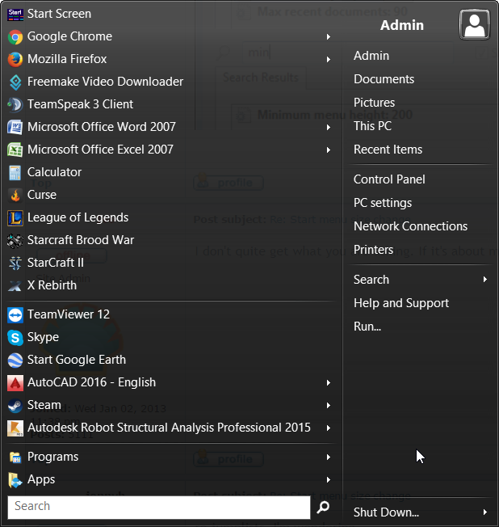
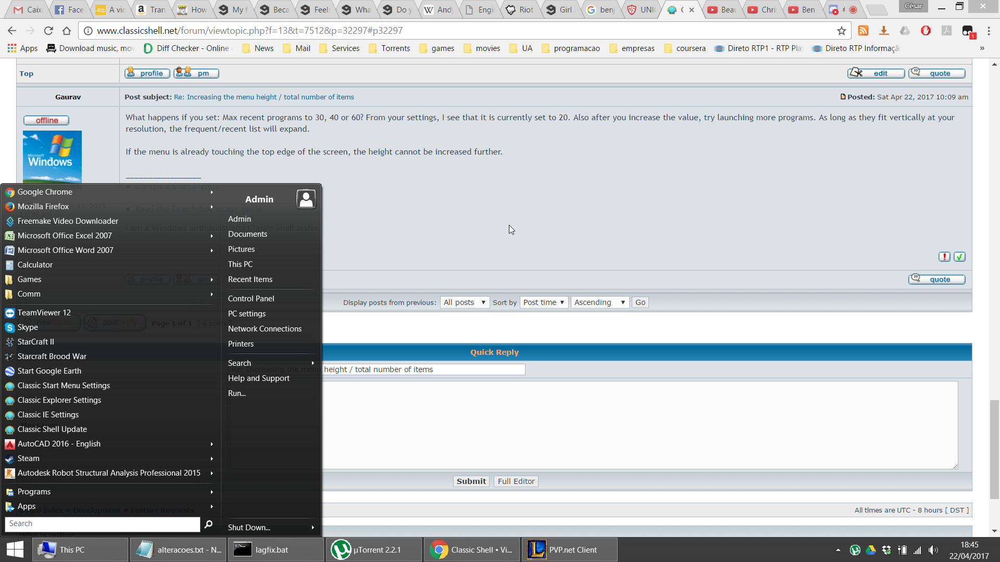

i solved the start menu folder by using start menu instead of pinned option.
but i can't increase the menu height. here's the xml file
| Attachments: |
|
Downloaded 65 times |
| Classic Shell http://www.classicshell.net/forum/ |
|
| Increasing the menu height / total number of items http://www.classicshell.net/forum/viewtopic.php?f=13&t=7512 |
Page 1 of 1 |
| Author: | ng80092a [ Sat Apr 22, 2017 7:15 am ] |
| Post subject: | Increasing the menu height / total number of items |
I have the following menu  It kinda sucks because the lower items (the frequently opened ones) are very few on the left column. How can i increase the menu height to show more items? Can i create folders to store the pinned items (the upper ones on the left column), in that zone? |
|
| Author: | Gaurav [ Sat Apr 22, 2017 7:46 am ] |
| Post subject: | Re: Increasing the menu height / total number of items |
In the style of the menu that you are using, the menu height should automatically increase as you increase the number of frequently used programs. Open Classic Start Menu Settings and in the search box at the top of the Settings window, type: max. Change "Max recent programs" value to increase the menu height. However, pager arrows will appear at the top and bottom of the list if you increase it too much. In that case, putting the pinned items inside a folder is a good idea. In Windows Explorer (File Explorer), go to this location: C:\Users\<YOUR USER NAME>\AppData\Roaming\Microsoft\Windows\Start Menu You can create any folders there and cut-paste (move) the existing pinned shortcuts inside them. |
|
| Author: | ng80092a [ Sat Apr 22, 2017 8:01 am ] |
| Post subject: | Re: Increasing the menu height / total number of items |
The height of the menu never increased, instead, the height for the frequently accessed programs became shorter and shorter as i pinned more shortcuts, and altough i have 20 in the option you mentioned, as you can see no pages show up edit: also, creating the folder has no impact at all on the menu. (I placed a shortcut inside as well, restarted the computer, no changes.) |
|
| Author: | Gaurav [ Sat Apr 22, 2017 8:58 am ] |
| Post subject: | Re: Increasing the menu height / total number of items |
Then there is some setting/configuration error. Can you post your Settings XML and attach it to this forum post? To export your Start Menu settings, click the "Backup" button and choose "Save to XML file". You can upload that XML here. That will give me a clear idea of how your exact Start menu configuration is. |
|
| Author: | ng80092a [ Sat Apr 22, 2017 9:49 am ] | ||
| Post subject: | Re: Increasing the menu height / total number of items | ||
i solved the start menu folder by using start menu instead of pinned option. but i can't increase the menu height. here's the xml file
|
|||
| Author: | Gaurav [ Sat Apr 22, 2017 10:09 am ] |
| Post subject: | Re: Increasing the menu height / total number of items |
What happens if you set: Max recent programs to 30, 40 or 60? From your settings, I see that it is currently set to 20. Also after you increase the value, try launching more programs. As long as they fit vertically at your resolution, the frequent/recent list will expand. If the menu is already touching the top edge of the screen, the height cannot be increased further. |
|
| Author: | ng80092a [ Sat Apr 22, 2017 10:47 am ] |
| Post subject: | Re: Increasing the menu height / total number of items |
Do you see 20 recent program links? No. so that's exactly what happens, nothing, there's not arrows to scroll, there's nothing just 5 or 6 items like there's some sort of height lock or max overall items in the menu. Also, I'm far from reaching the top edge of the screen as you can see here  |
|
| Author: | Gaurav [ Sat Apr 22, 2017 11:43 pm ] | ||
| Post subject: | Re: Increasing the menu height / total number of items | ||
ng80092a wrote: Do you see 20 recent program links? No. so that's exactly what happens, nothing, there's not arrows to scroll, there's nothing just 5 or 6 items like there's some sort of height lock or max overall items in the menu. Also, I'm far from reaching the top edge of the screen. Compared to the earlier screenshot which had 6 frequent programs, I now see 12 frequent programs in the list. Increase the "Max recent programs" setting value to 60 first and click OK. Then after increasing it and depending on how many pinned items you have, the Start Menu will re-calculate how many frequent items it can show. You must then launch the specified number of programs. (For example, if your earlier setting was 20 and you had launched e.g. 12 programs, then it will show only 12 programs). Only when you launch enough programs after increasing the setting, the height of the menu will increase.
|
|||
| Author: | ng80092a [ Sun Apr 23, 2017 5:35 am ] |
| Post subject: | Re: Increasing the menu height / total number of items |
i believe the problem is that i didn't have enough frequent programs, it's all solved now. thanks for the help. |
|
| Page 1 of 1 | All times are UTC - 8 hours [ DST ] |
| Powered by phpBB® Forum Software © phpBB Group https://www.phpbb.com/ |
|